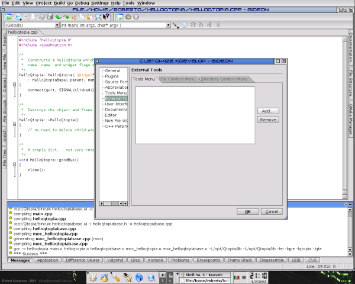

KDevelop 3 and Qtopia 1.6 (Step 5)
prev
next

You need the
Qt Virtual FB
utility to test your new Qtopia application. Integrating a tool in KDevelop 3 is very easy, go to the
Settings
menu, choose
Configure Gideon